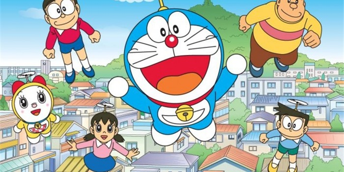

Doraemon Homepage
Thông báo !!!
Chào mừng các bạn đến với website giới thiệu các nhân vật chính trong bộ truyện doraemon.
Hãy chia sẻ rộng rãi đến với mọi người nhé!

Dooraemon - Chú mèo máy đến từ tương lai
Doraemon
Doraemon tên phiên bản cũ tại Việt Nam là Đôrêmon, là một nhân vật thuộc loại robot phỏng hình mèo trong bộ truyện và phim hoạt hình cùng tên. Doraemon sinh ngày 3 tháng 9 năm 2112 (thuộc thế kỉ XXII). Cậu có thân hình báo tròn, da màu xanh lam (thực ra sinh ra cậu có da màu vàng), không có tai do bị chuột gặm mất.
Nobita
Nobi Nobita tên phiên bản cũ tại Việt Nam là Nôbi Nôbita ,là nhân vật chính trong bộ truyện nổi tiếng Doraemon của tác giả Fujiko Fujio và là trung tâm của câu truyện. Cậu bé con một của ông Nôbi Nobisuke và bà Nobi Tamako (tên trước khi về nhà chồng là "Kataoka Tamako"), sống ở phường Nerima, Tokio.
Shizuka
Minamoto Shizuka tên phiên bản cũ tại Việt Nam là Xuka, là một cô bé 9 tuổi trong truyện Doraemon của tác giả Fujiko Fujio, là con một của gia đinh Minamoto. Shizuka là một cô gái đáng yêu, hiền lành, thân thiện, luôn lễ phép nên được nhiều người yêu quý. Cô sống ở Tokyo, học lớp 4E cùng với những người bạn của mình là Nobita, Suneo, Jaian, Dekisugi
Và các thành viên khác
Chaien
Xeko

Deki